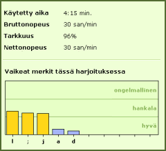

Tehdessäsi harjoituksia TypingMaster seuraa ja analysoi kirjoittamistasi. Harjoituksen jälkeen näet yleensä seuraavat, tärkeät tulokset:
Esittelemme lyhyesti näiden tulosten merkityksen, jotta voisit seurata ja hyödyntää niitä opiskelussa. |
 |